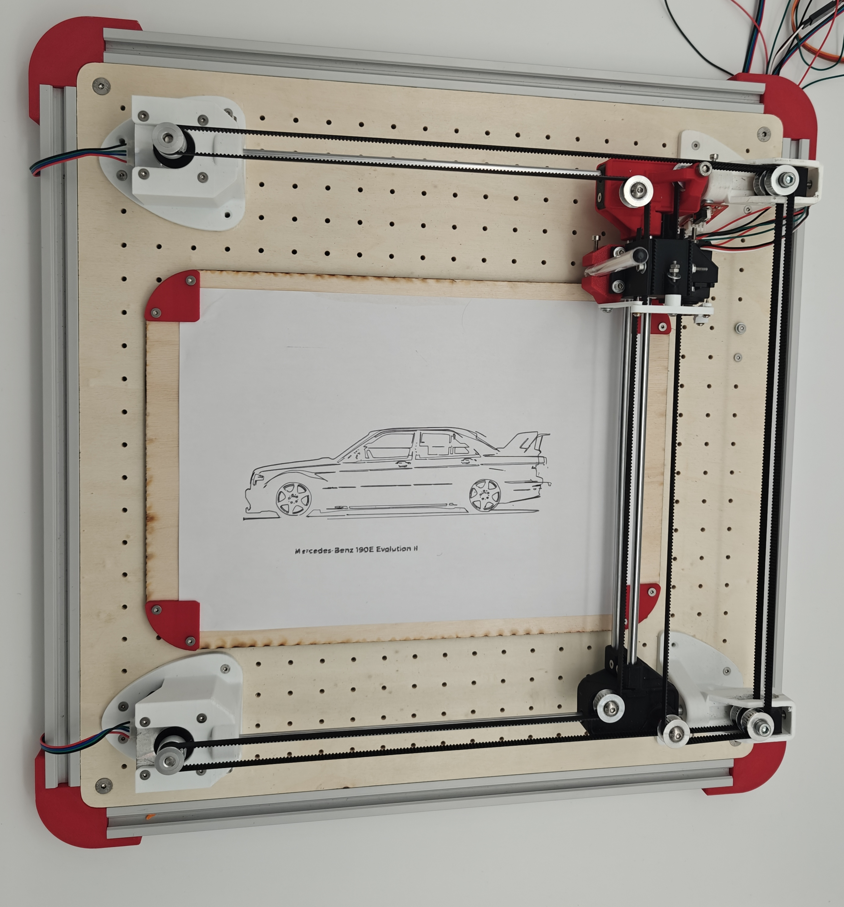
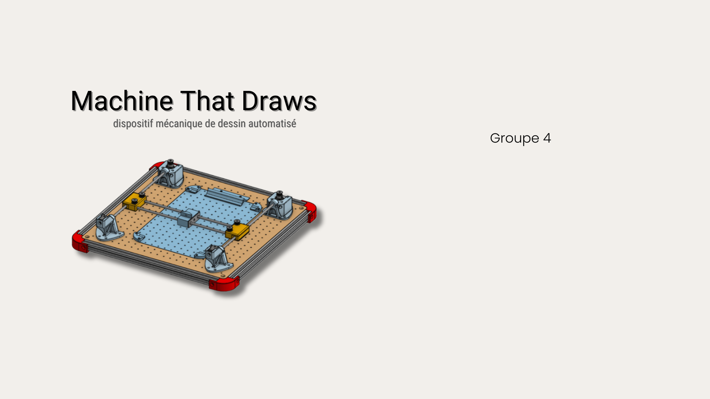
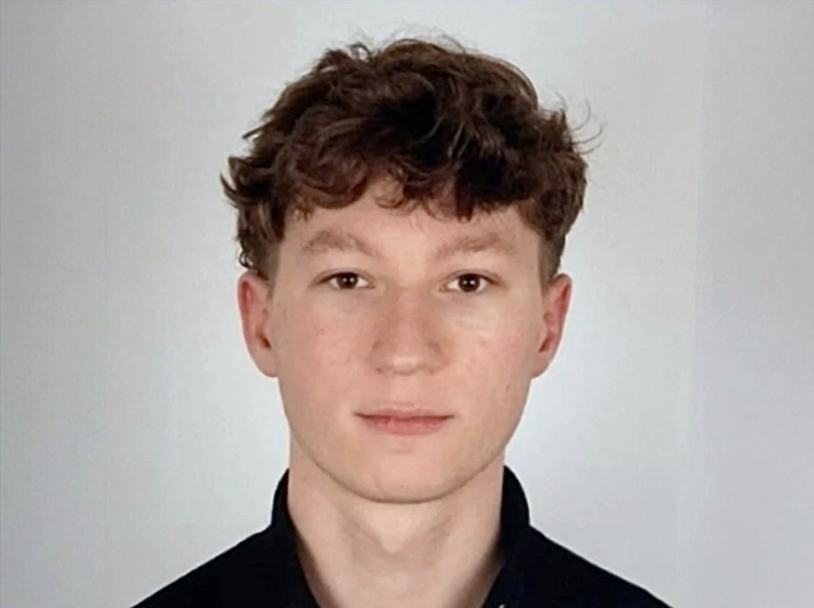
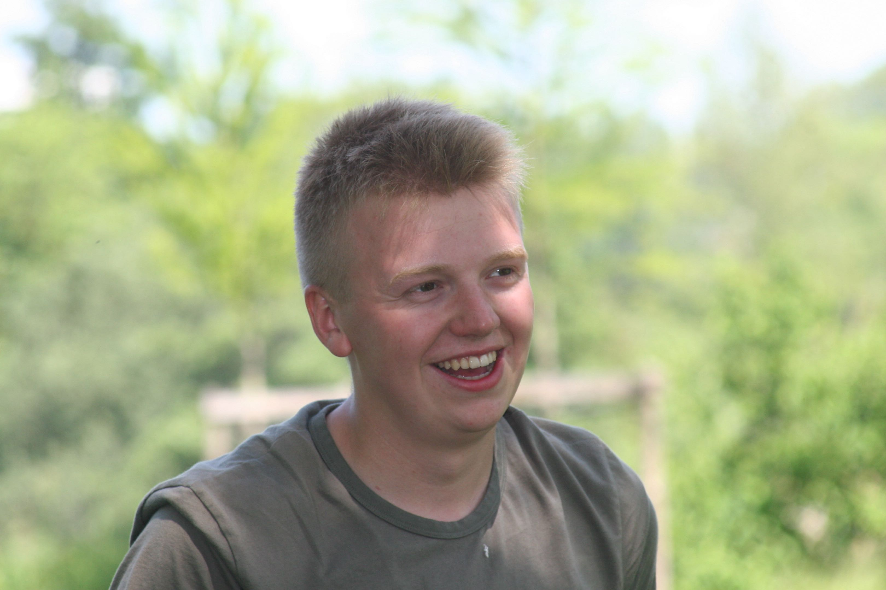

14 Quai de la Somme, Amiens
PROJET ACADÉMIQUE

Machine That Draws est un système robotisé capable de reproduire des dessins numériques sur papier. La machine utilise des moteurs, une structure mécanique et un système électronique pour déplacer un stylo avec précision sur deux axes.
L’objectif de ce projet est de combiner conception mécanique, électronique et programmation afin de créer un système de dessin automatisé.
La machine convertit un dessin numérique en mouvements mécaniques afin de reproduire le dessin sur une feuille de papier.
Les moteurs contrôlent les axes X et Y tandis que la structure assure un déplacement stable et précis du stylo

Groupe
Quatre
Concevoir la structure de la machine capable de déplacer un stylo avec précision sur une surface de dessin.
Réaliser la conception complète de la machine sur un logiciel de CAO (Onshape) afin de préparer la fabrication.
Créer le circuit électronique permettant de contrôler les moteurs et les différents composants du système.
Développer le code permettant de piloter les moteurs et d’exécuter les instructions de dessin automatiquement.
Produire les différentes pièces de la machine puis assembler l’ensemble pour obtenir un système fonctionnel.
Vérifier le bon fonctionnement de la machine, ajuster les réglages et améliorer la précision des dessins réalisés.
La partie électronique et hardware du projet a commencé par une analyse du circuit de la carte de contrôle et du shield afin de comprendre le fonctionnement global du système.
Nous avons ensuite réalisé le câblage des drivers et des moteurs pas à pas, suivi d’un calibrage précis (Vref) pour optimiser les performances tout en évitant la surchauffe.
La conception électronique a été modélisée sous KiCad afin de structurer et documenter le système.
Le pilotage a été assuré via le firmware FluidNC, configuré selon nos besoins, avec une phase de tests pour valider le fonctionnement des moteurs.
Enfin, une optimisation mécanique a été menée avec la conception d’une pièce de maintien de la feuille, permettant d’éliminer le jeu et d’améliorer la précision des dessins.
Développement
Le site a été entièrement développé en HTML, CSS et JavaScript, avec l’objectif de proposer une interface à la fois claire, moderne et agréable à utiliser. Nous avons porté une attention particulière à l’organisation du code et à l’expérience utilisateur afin de mettre en valeur le projet Machine That Draws de manière efficace.
Un travail important a également été réalisé sur le responsive design, permettant au site de s’adapter automatiquement à tous les supports : ordinateurs, smartphones et tablettes. Cette optimisation nous permet notamment de présenter le projet dans les meilleures conditions lors de la journée des projets, quel que soit le dispositif utilisé.
Le résultat est un site fluide, accessible et pensé pour valoriser à la fois l’aspect technique et créatif du projet.
Enfin, le site a été mis en ligne via GitHub, ce qui nous a permis de gérer facilement les versions et de le déployer rapidement. Nous avons fait le choix de développer un code entièrement original, correspondant précisément à nos besoins et à l’identité du projet, plutôt que d’utiliser le format Markdown conseillé. Cette liberté nous a permis d’obtenir un rendu plus personnalisé, plus maîtrisé et mieux adapté à nos attentes.

Lucas
La conception de la machine a été réalisée à l’aide du logiciel de modélisation 3D Onshape, avec pour objectif de créer une structure à la fois précise, fonctionnelle et adaptée aux contraintes du projet.
Nous avons accordé une attention particulière aux dimensions, aux assemblages et à la solidité des différentes pièces afin d’assurer un fonctionnement fluide et fiable de la machine.
Un travail important a également été mené sur la modélisation des différentes pièces mécaniques, en prenant en compte les contraintes liées au mouvement et à l’intégration des composants électroniques.
Cette phase nous a permis de visualiser concrètement le projet avant sa fabrication, mais aussi d’anticiper d’éventuels problèmes techniques et d’optimiser la conception globale.
Les pièces conçues ont ensuite été fabriquées grâce à l’impression 3D, ce qui nous a permis de passer rapidement de la modélisation numérique à un prototype physique.
Ce procédé offre une grande précision et une flexibilité importante, notamment pour ajuster ou améliorer certaines pièces en cours de projet.
Le résultat est une structure cohérente, personnalisée et parfaitement adaptée à notre machine, combinant précision de conception et efficacité de fabrication.

Antoine